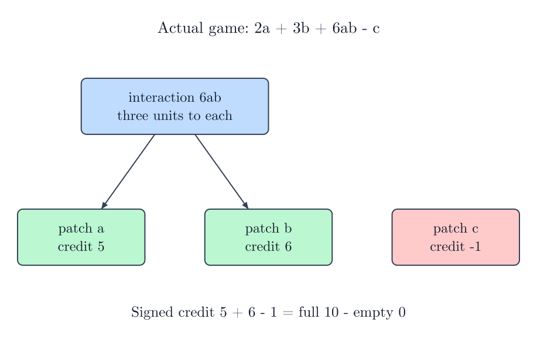
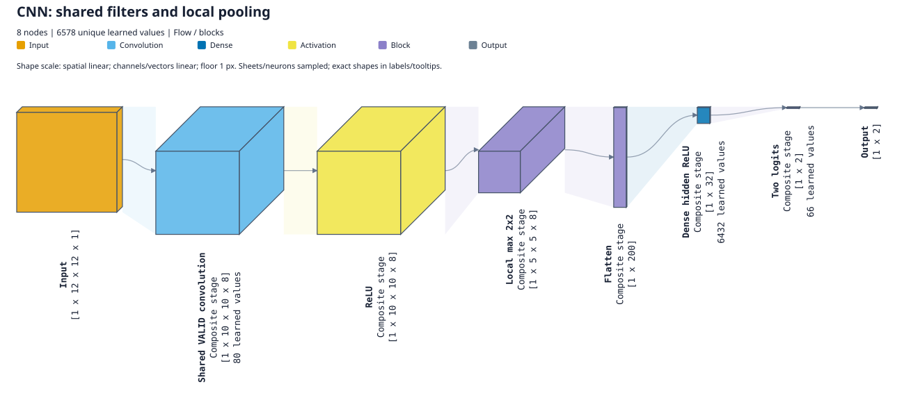
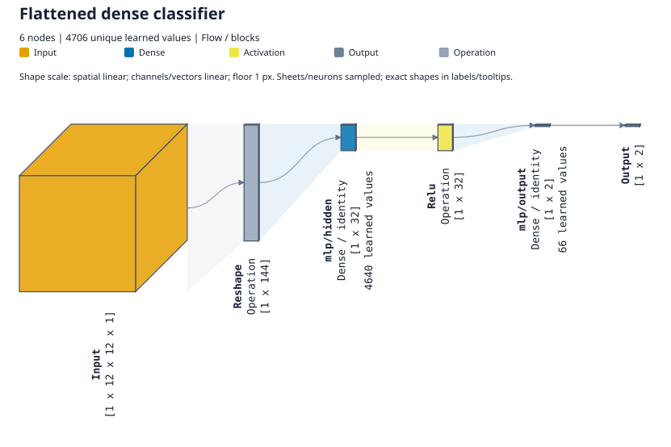
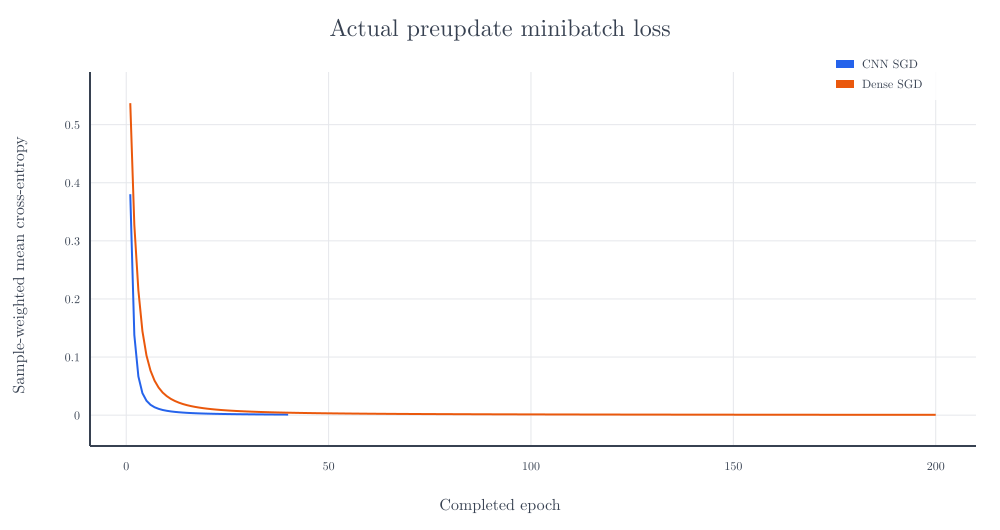
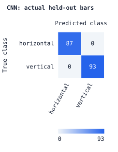
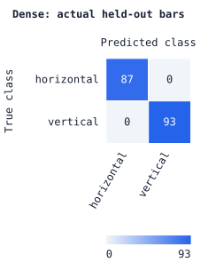
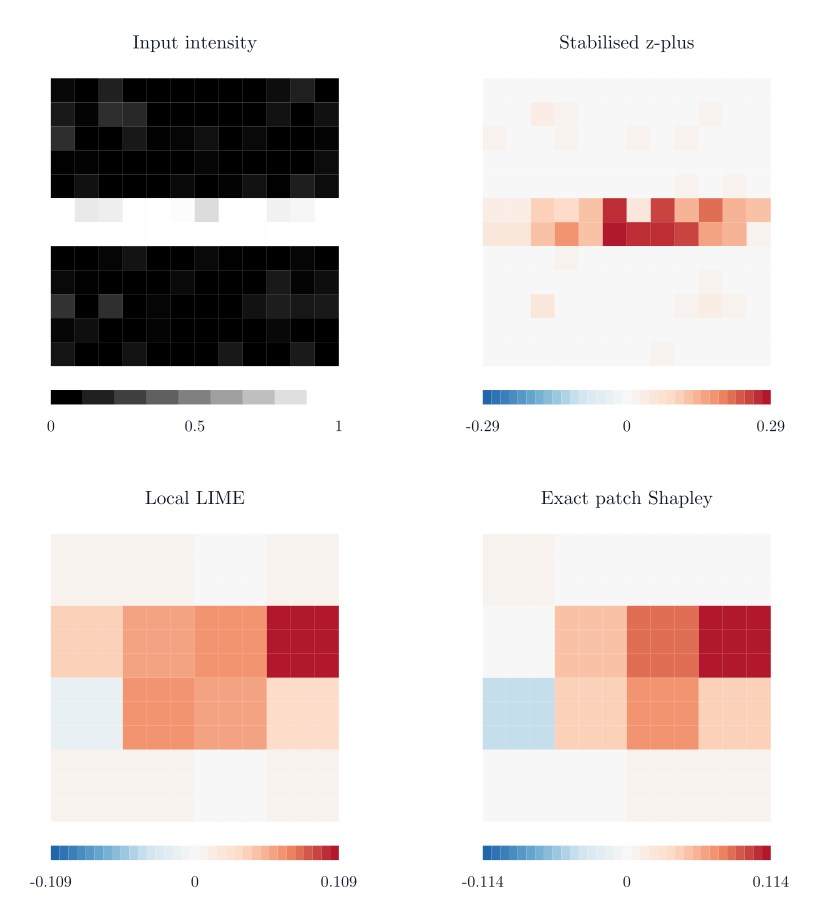
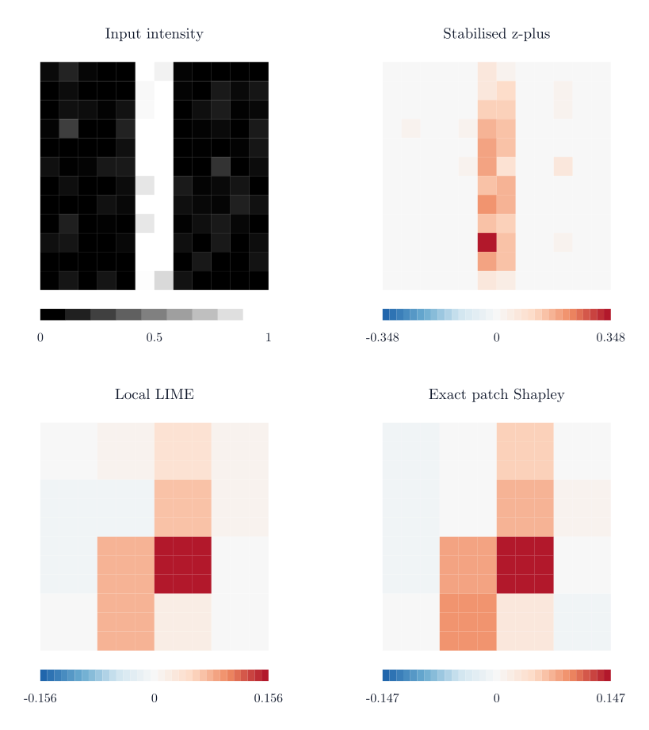
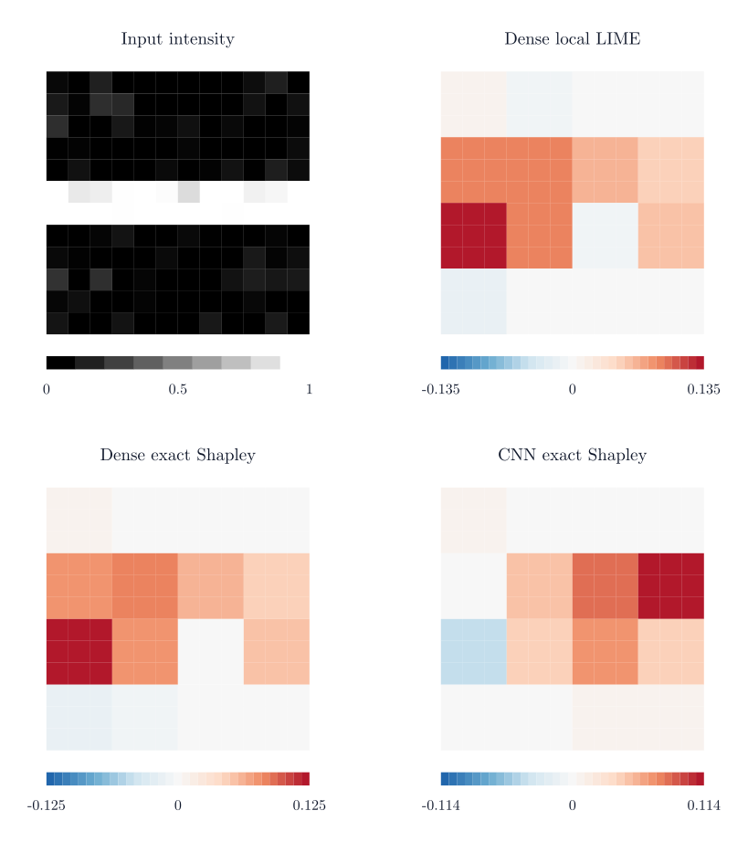
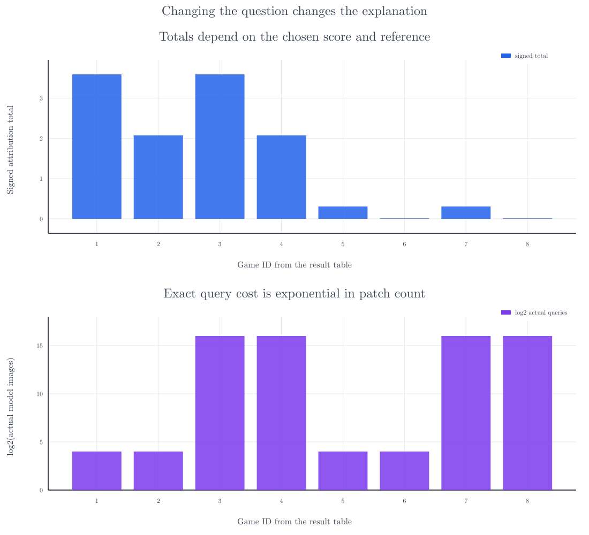

Image Explanations: Local Fits and Exact Coalition Credit
Abstract
Given one image and a classifier score, assign signed contributions to image regions while making the reference image and target explicit. LIME fits a local linear surrogate to masked predictions; exact coalition attribution averages marginal changes over every ordering of the patches. We begin with three patches whose interaction can be checked by hand, then explicitly train tensor CNN and dense classifiers on the original noisy-bar task. Batched native C++ explainers retain actual masks or coalition scores, measure fit quality and efficiency residuals, and compare signed maps with a model-specific relevance rule. Baseline and score changes expose which question each explanation answers.
Three patches: share the interaction and retain the negative contribution
Let three one-pixel patches be on or off, a,b,c in {0,1}. The score v(a,b,c)=2a+3b+6ab−c has additive contributions two, three and minus one, plus an interaction of six when a and b are both present. In a random ordering, a arrives after b half the time, and b arrives after a half the time. Each receives three interaction units, giving Shapley values [5,6,−1]. Their sum is ten, exactly the full score minus the empty score in this small game. A negative attribution is part of the answer and must not be discarded.
The program reads all eight actual coalition scores and dispatch counts from the tensor kernel. LIME fits the same game near the full coalition; its coefficients need not split the interaction equally or sum to ten.
#include <dm/dm.hpp>
int main(){
namespace n=dm::nn;std::filesystem::create_directories("build");n::set_num_threads(2);
const auto image=n::ones({1,1,3,1},n::DType::Float64);
n::ImageScoreBatch predict=[](const n::Tensor& x){const auto z=n::reshape(x,{x.size(0),3});const auto a=n::select(z,1,0),b=n::select(z,1,1),c=n::select(z,1,2);return 2*a+3*b+6*a*b-c;};
n::ImagePatchOptions o;o.patch_rows=1;o.patch_cols=3;o.batch_size=3;
const auto shap=n::exact_image_shapley(image,predict,o);n::ImageLimeOptions l;l.patches=o;l.samples=800;
const auto lime=n::lime_image(image,predict,l);const auto phi=shap.patch_values.to_vector<double>();
std::print("| integer mask | a | b | c | actual score |\n| ---: | ---: | ---: | ---: | ---: |\n");
const auto scores=shap.coalition_scores.to_vector<double>();for(std::size_t s=0;s<scores.size();++s)std::print("| {} | {} | {} | {} | {:.0f} |\n",s,s&1,(s>>1)&1,(s>>2)&1,scores[s]);
std::print("\nShapley: {}; base {:.0f}; full {:.0f}; sum {:.0f}; efficiency residual {:.3g}; evaluations {}; batches {}; marginal terms {}.\n",phi,shap.base_value,shap.full_value,n::sum(shap.patch_values).item(),shap.efficiency_residual,shap.work.evaluations,shap.work.predict_calls,shap.work.marginal_terms);
std::print("LIME: {}; intercept {:.6f}; weighted in-sample R2 {:.6f}; surrogate full {:.6f}; actual full {:.0f}.\n",lime.patch_values.to_vector<double>(),lime.intercept,lime.r_squared,lime.fitted_full,lime.full_value);
if(phi!=std::vector<double>{5,6,-1}||shap.efficiency_residual!=0)throw std::runtime_error("tiny interaction attribution failed");
dm::graphics::Diagram g(64,1100);dm::graphics::DiagramNodeStyle box;box.width=3.4;box.height=1.5;box.font_size=24;
for(int j=0;j<3;++j){box.fill=j==2?dm::graphics::RGB{254,202,202}:dm::graphics::RGB{187,247,208};g.node(std::to_string(j),{5.*j,0},std::format("patch {}\ncredit {:.0f}",char('a'+j),phi[j]),box);}
box.width=5;box.fill={191,219,254};g.node("interaction",{2.5,3.5},"interaction 6ab\nthree units to each",box).edge("interaction","0").edge("interaction","1")
.text({5,5.6},"Actual game: 2a + 3b + 6ab - c",27).text({5,-2},"Signed credit 5 + 6 - 1 = full 10 - empty 0",25).save_svg("build/xai_tiny.svg");
}| integer mask | a | b | c | actual score |
|---|---|---|---|---|
| 0 | 0 | 0 | 0 | 0 |
| 1 | 1 | 0 | 0 | 2 |
| 2 | 0 | 1 | 0 | 3 |
| 3 | 1 | 1 | 0 | 11 |
| 4 | 0 | 0 | 1 | -1 |
| 5 | 1 | 0 | 1 | 1 |
| 6 | 0 | 1 | 1 | 2 |
| 7 | 1 | 1 | 1 | 10 |
Shapley: [5, 6, -1]; base 0; full 10; sum 10; efficiency residual 0; evaluations 8; batches 3; marginal terms 12. LIME: [7.964501237961886, 8.962538088552693, -1.004799412500552]; intercept -5.927418; weighted in-sample R2 0.998430; surrogate full 9.994822; actual full 10.

Define the masking game before interpreting its answer
The input is one finite NHWC image x. Split its H×W spatial positions into R×C nonempty rectangular patches. Patch indices follow p=floor(row·R/H)·C+floor(col·C/W), with row-major indexing. Every channel of a patch switches together. A binary mask z keeps original pixels where z_p=1 and replaces off patches by a scalar baseline. The prediction callback returns one fixed target score per masked image; its learned parameters stay fixed. For a coalition S, define v(S)=f(mask(x,S,baseline)).
This fixed-baseline game is explicit. It does not estimate what missing features would look like conditionally on the observed ones. In particular, black rectangles can be unlike training images. Calling its Shapley values "exact" means all coalitions were evaluated, with floating-point arithmetic. It does not make the masking choice a causal intervention or establish faithfulness on natural images. The original SHAP paper also discusses conditional-expectation games; those are a different missing-feature definition.
For P=RC patches, the Shapley coefficient is
A subset S precedes p in S(P−|S|−1) of the P! permutations, which
derives the weight. In any one ordering, marginal contributions telescope
from v(empty) to v(full). Averaging gives efficiency,
sum(phi)=v(full)−v(empty), in exact arithmetic. The implementation reports
the actual floating residual instead of forcing the sum to match. Symmetric
players have interchangeable permutations; a player with zero marginal always
receives zero; and averaging is linear in the game. These are the familiar
symmetry, null-player and additivity properties of Shapley credit.
The native implementation scores each of 2P coalitions once, in ascending integer-mask order with patch zero the least significant bit. It then performs P·2(P−1) weighted marginal terms. It retains the actual Float64 score table, uses tensor gathers/reductions, and limits prediction image batches separately. Enumeration is exponential; P<=20 is enforced, and a configurable evaluation quota defaults to one million. Zero disables the quota alone. Geometry and known query count are checked before the first callback. This quota is not a RAM, wall-time or callback-internal-work bound.
A local surrogate uses different weights and a different objective
For N perturbations, X has an intercept column and the P binary mask columns. The native LIME variant minimises
Differentiating gives (XᵀWX+lambda·diag(0,1,...,1)) beta=XᵀWf. Float64 tensor Cholesky solves this system without an explicit inverse. The first two samples are full and empty anchors; remaining bits come from a local seeded MT19937-64. Positive ridge penalises coefficients, leaving the intercept unpenalised. This custom fraction-off kernel and ridge fit uses every patch. It is neither sparse feature-selecting LIME nor KernelSHAP's special regression kernel.
Retained masks, scores and proximity weights are the actual fit inputs. Weighted in-sample R² measures this sampled fit, with zero for constant scores; it is not held-out fidelity. The report also compares the surrogate's full-mask score with the actual anchored score. Seed, kernel width, baseline, partition and target definition can change the answer. Batch size should change only execution grouping for a deterministic, example-independent callback.
These native explanation APIs require CPU tensors and perform no implicit device transfer. All explanation operations run under NoGradGuard and return detached results. The callback can still have external side effects; earlier effects cannot be rolled back if a later callback throws. Nonfinite or wrongly shaped scores fail explicitly. The legacy scalar DenseMatrix explainers remain available; this tensor surface adds batched dispatch and explicit diagnostics, and its anchored sampling is not a numerical reproduction of the old scalar wrapper.
The two tensor models and their actual architectures
We retain the original 12×12 thickness-two noisy horizontal/vertical bar task, with eight valid 3×3 CNN filters, ReLU, local 2×2 pooling, a 32-unit ReLU hidden layer and two logits. The dense baseline flattens the same 144 pixels and uses 32 hidden ReLU units. Their learned leaves are explicit tensor parameters. The diagrams execute each configuration and read actual parameter counts; the following program performs every training update.
#include <dm/dm.hpp>
int main(){
namespace n=dm::nn;namespace m=n::models;n::set_num_threads(2);
std::filesystem::create_directories("build");std::filesystem::create_directories("figures");
std::print("| actual model | learned leaves | learned scalars | traced scalars |\n| :--- | ---: | ---: | ---: |\n");
for(int kind:{1,0}){n::ParameterStore p(1);n::Module model([&](const n::Tensor& x){if(kind)return m::DenseImageBaseline(p,x);const auto y=m::SmallImageCnn(p,x);
n::model_stage("Shared VALID convolution",x,y.conv_pre);n::model_stage("ReLU",y.conv_pre,y.conv_relu);n::model_stage("Local max 2x2",y.conv_relu,y.pooled);n::model_stage("Flatten",y.pooled,y.flat);n::model_stage("Dense hidden ReLU",y.flat,y.hidden);n::model_stage("Two logits",y.hidden,y.logits);return y.logits;},kind?"Dense image baseline":"CNN for explanation");
n::ModelPlotOptions o;o.title=kind?"Flattened dense classifier":"CNN: shared filters and local pooling";o.style=n::ModelPlotStyle::Flow;o.detail=n::ModelPlotDetail::Blocks;o.labels.type=n::ModelPlotLabel::Full;o.labels.size=13;o.labels.wrap=28;o.sizing.spatial_scale=n::ModelPlotScale::Linear;o.sizing.channel_scale=n::ModelPlotScale::Linear;o.sizing.minimum_extent=1;o.spacing.layer=48;o.spacing.lane=48;
const auto figure=model.plot(n::zeros({1,12,12,1}),o);const auto file=kind?"xai_mlp_architecture.svg":"xai_cnn_architecture.svg";figure.save_svg(std::string("build/")+file);if(kind)std::filesystem::copy_file(std::string("build/")+file,std::string("figures/")+file,std::filesystem::copy_options::overwrite_existing);
std::print("| {} | {} | {} | {} |\n",kind?"dense":"CNN",p.parameters().size(),p.count(),figure.parameter_count());if(p.count()!=figure.parameter_count())throw std::runtime_error("architecture/store count mismatch");}
}| actual model | learned leaves | learned scalars | traced scalars |
|---|---|---|---|
| dense | 4 | 4706 | 4706 |
| CNN | 6 | 6578 | 6578 |


Train on fitting bars and evaluate held-out predictions
The canonical generator makes 600 images with seed 20240815: 300 of each orientation, alternating before shuffling. Positions cover 0..10; independent Gaussian noise has scale 0.08 and values are clipped to [0,1]. Its saved shuffle order gives 420 fitting and 180 held-out rows. Both models use the same split; held-out labels never contribute to an update.
Model and minibatch seeds are one. The CNN performs forty SGD epochs and the dense model two hundred, both with learning rate 0.05 and batch size 16. The fused mean sparse softmax cross-entropy is the training objective. There is no early stopping, regularisation or augmented training data. Checkpoints are written locally for subsequent programs in this report; they are trained here, rather than loaded from an external example. The plotted loss is the sample-weighted mean of actual preupdate minibatch losses in each epoch. Final confusion matrices use actual held-out predictions, true classes in rows.
#include <dm/dm.hpp>
int main(){
namespace n=dm::nn;namespace m=n::models;n::set_num_threads(2);
std::filesystem::create_directories("build");std::filesystem::create_directories("figures");
const auto data=n::make_bar_images(300);const std::vector<std::int64_t> fit(data.shuffled_rows.begin(),data.shuffled_rows.begin()+420),test(data.shuffled_rows.begin()+420,data.shuffled_rows.end());
const auto x=n::take_rows(data.images,fit),y=n::take_rows(data.labels,fit),tx=n::take_rows(data.images,test),ty=n::take_rows(data.labels,test);
std::print("Data: {} generated; {} fitting; {} held out; image shape {}; horizontal label 0; vertical label 1.\n\n",data.labels.size(0),fit.size(),test.size(),data.images.shape());
auto plot=dm::graphics::RPlot::create();std::print("| model | epochs | optimizer calls | parameters | fitting accuracy | held-out accuracy | held-out NLL |\n| :--- | ---: | ---: | ---: | ---: | ---: | ---: |\n");
for(int kind=0;kind<2;++kind){n::ParameterStore p(1);auto forward=[&](const n::Tensor& input){return kind?m::DenseImageBaseline(p,input):m::SmallImageCnn(p,input).logits;};{n::NoGradGuard guard;(void)forward(n::take_rows(x,{0}));}
n::OptimizerConfig rule;rule.kind=n::OptimizerKind::Sgd;n::Optimizer optimizer(p,.05,rule);n::BatchOrder batches(fit.size(),16,1);const int epochs=kind?200:40;std::size_t calls=0;std::vector<double> epoch,losses;
for(int e=0;e<epochs;++e){batches.begin_epoch();n::WeightedMean average;for(auto rows=batches.next();!rows.empty();rows=batches.next()){
const auto logits=forward(n::take_rows(x,rows));const auto loss=n::sparse_softmax_cross_entropy(logits,n::take_rows(y,rows));optimizer.minimize(loss);++calls;average.add(loss.item(),rows.size());}
epoch.push_back(e+1);losses.push_back(average.value());}
p.save(kind?"build/xai_mlp.npz":"build/xai_cnn.npz");n::NoGradGuard guard;const auto logits=forward(tx);n::ConfusionMatrix confusion(2);confusion.add(ty,n::argmax(logits,1));n::ConfusionMatrixPlotOptions co;co.labels={"horizontal","vertical"};co.title=kind?"Dense: actual held-out bars":"CNN: actual held-out bars";const auto file=kind?"xai_mlp_confusion.svg":"xai_cnn_confusion.svg";confusion.save_svg(std::string("build/")+file,co);std::filesystem::copy_file(std::string("build/")+file,std::string("figures/")+file,std::filesystem::copy_options::overwrite_existing);
std::print("| {} | {} | {} | {} | {:.6f} | {:.6f} | {:.9f} |\n",kind?"dense":"CNN",epochs,calls,p.count(),n::accuracy(forward(x),y),confusion.accuracy(),n::sparse_softmax_cross_entropy(logits,ty).item());
plot.line(epoch,losses,kind?"Dense SGD":"CNN SGD",kind?dm::graphics::RGB{234,88,12}:dm::graphics::RGB{37,99,235},2);}
plot.title("Actual preupdate minibatch loss").x_label("Completed epoch").y_label("Sample-weighted mean cross-entropy").size(1000,530).save_svg("build/xai_training.svg");
}Data: 600 generated; 420 fitting; 180 held out; image shape [600, 12, 12, 1]; horizontal label 0; vertical label 1.
| model | epochs | optimizer calls | parameters | fitting accuracy | held-out accuracy | held-out NLL |
|---|---|---|---|---|---|---|
| CNN | 40 | 1080 | 6578 | 1.000000 | 1.000000 | 0.001124526 |
| dense | 200 | 5400 | 4706 | 1.000000 | 1.000000 | 0.000604551 |



Explain two new bars with one fixed raw target score
We generate a new horizontal and vertical example at position five using seed 99. Each explanation fixes its target to that model's predicted class on the full image; removing patches never changes which target column is queried. The grid is the original 4×4, baseline zero, and LIME uses 800 samples. Exact attribution evaluates 65,536 masks, while LIME evaluates 800. Both dispatch batches of at most 256 images.
Here the shared target is a raw logit, allowing a comparison in the same score units with the native stabilised z-plus relevance rule. That rule uses the CNN's actual weights and max-pool winners; it seeds the full raw logit, omits biases and negative connections in redistribution denominators, and can lose relevance mass through zero paths and epsilon. It is model specific, may be signed, and does not promise a sum equal to full-minus-baseline. The original report compared probability perturbations with raw-score relevance; the next experiment makes the probability change explicit instead.
Patch scores are divided uniformly among their spatial pixels before display, so each expanded map sums to its patch total up to rounding. This bookkeeping does not infer within-patch resolution. Repeating the full patch score at every pixel, as the old display did, would multiply each patch contribution by its area. Native correlation keeps negative entries. Constant maps give an undefined NaN correlation, rather than a fabricated zero.
Each signed map uses a blue-white-red key, with white zero and its own symmetric numeric limits. The input uses a black-white zero-to-one key. Square cells retain the image aspect. Colour brightness across differently scaled panels is not a quantitative comparison. Numeric score sums and signed Pearson correlations provide the comparison. The first image row appears at the top.
#include <dm/dm.hpp>
int main(){
namespace n=dm::nn;namespace m=n::models;n::set_num_threads(2);
std::filesystem::create_directories("build");std::filesystem::create_directories("figures");n::ParameterStore p(1);{n::NoGradGuard guard;(void)m::SmallImageCnn(p,n::zeros({1,12,12,1}));}p.load("build/xai_cnn.npz");
n::BarImageOptions b;b.min_position=5;b.max_position=5;const auto data=n::make_bar_images(1,99,b);n::ImagePatchOptions o;n::ImageLimeOptions l;l.samples=800;l.patches=o;std::vector<std::string> query_summaries;std::optional<dm::graphics::Diagram> primary;
std::print("| example | target | full logit | baseline logit | sum Shapley | efficiency residual | LIME R2 | fitted full | z-plus pixel sum | corr LIME,Shapley | corr z-plus,Shapley |\n| :--- | ---: | ---: | ---: | ---: | ---: | ---: | ---: | ---: | ---: | ---: |\n");
for(int i=0;i<2;++i){const auto x=n::take_rows(data.images,{i});std::int64_t target;{n::NoGradGuard guard;target=n::argmax(m::SmallImageCnn(p,x).logits,1).item<std::int64_t>();}
n::ImageScoreBatch score=[&](const n::Tensor& batch){return n::select(m::SmallImageCnn(p,batch).logits,1,target);};
const auto shap=n::exact_image_shapley(x,score,o);const auto lime=n::lime_image(x,score,l);const auto relevance=m::SmallImageCnnZPlus(p,x,{target});
const auto sp=n::expand_image_attributions(shap.patch_values,12,12),lp=n::expand_image_attributions(lime.patch_values,12,12),rp=relevance.input_relevance;
std::print("| {} | {} | {:.6f} | {:.6f} | {:.6f} | {:.3g} | {:.6f} | {:.6f} | {:.6f} | {:.6f} | {:.6f} |\n",i?"vertical":"horizontal",target,shap.full_value,shap.base_value,n::sum(shap.patch_values).item(),shap.efficiency_residual,lime.r_squared,lime.fitted_full,n::sum(rp).item(),n::attribution_correlation(lp,sp),n::attribution_correlation(rp,sp));
if(std::abs(shap.efficiency_residual)>1e-8||std::abs(n::sum(sp).item()-n::sum(shap.patch_values).item())>1e-8)throw std::runtime_error("efficiency or pixel-area conservation failed");
auto picture=n::diagram_image_maps(n::concat({x,rp,lp,sp},0),2,{"Input intensity","Stabilised z-plus","Local LIME","Exact patch Shapley"},{false,true,true,true});
if(i){picture.save_svg("build/xai_cnn_vertical.svg");std::filesystem::copy_file("build/xai_cnn_vertical.svg","figures/xai_cnn_vertical.svg",std::filesystem::copy_options::overwrite_existing);}else primary=std::move(picture);
query_summaries.push_back(std::format("{} queries: Shapley {} images / {} batches / {} marginals; LIME {} images / {} batches.",i?"Vertical":"Horizontal",shap.work.evaluations,shap.work.predict_calls,shap.work.marginal_terms,lime.work.evaluations,lime.work.predict_calls));}
primary->save_svg("build/xai_cnn_horizontal.svg");
for(const auto& summary:query_summaries)std::print("\n{}\n",summary);
}| example | target | full logit | baseline logit | sum Shapley | efficiency residual | LIME R2 | fitted full | z-plus pixel sum | corr LIME,Shapley | corr z-plus,Shapley |
|---|---|---|---|---|---|---|---|---|---|---|
| horizontal | 0 | 3.972445 | 0.382867 | 3.589577 | -8.88e-16 | 0.769835 | 3.924103 | 3.972444 | 0.935725 | 0.325561 |
| vertical | 1 | 3.703508 | -0.428701 | 4.132209 | -1.78e-15 | 0.934599 | 3.745583 | 3.703508 | 0.991494 | 0.305357 |
Horizontal queries: Shapley 65536 images / 256 batches / 524288 marginals; LIME 800 images / 4 batches.
Vertical queries: Shapley 65536 images / 256 batches / 524288 marginals; LIME 800 images / 4 batches.


Reuse the same callback contract for the dense model
The explainers receive no network structure. This program loads the dense checkpoint trained above, selects the horizontal example and explains its class-zero raw logit with exactly the same grid, baseline and 800-sample LIME settings. It also evaluates the CNN's class-zero coalition game on that same image for a fixed-class cross-model comparison. Agreement is measured, not assumed: independently trained architectures can use different cues. The area-distributed maps retain signs. Kernel methods and trees can implement the same callback contract if their scores obey its batching requirements.
#include <dm/dm.hpp>
int main(){
namespace n=dm::nn;namespace m=n::models;n::set_num_threads(2);std::filesystem::create_directories("build");
n::ParameterStore dense(1),cnn(1);{n::NoGradGuard guard;(void)m::DenseImageBaseline(dense,n::zeros({1,12,12,1}));(void)m::SmallImageCnn(cnn,n::zeros({1,12,12,1}));}dense.load("build/xai_mlp.npz");cnn.load("build/xai_cnn.npz");
n::BarImageOptions b;b.min_position=5;b.max_position=5;const auto x=n::take_rows(n::make_bar_images(1,99,b).images,{0});
n::ImageScoreBatch predict=[&](const n::Tensor& batch){return n::select(m::DenseImageBaseline(dense,batch),1,0);};n::ImageLimeOptions l;
const auto shap=n::exact_image_shapley(x,predict);const auto lime=n::lime_image(x,predict,l);const auto other=n::exact_image_shapley(x,[&](const n::Tensor& batch){return n::select(m::SmallImageCnn(cnn,batch).logits,1,0);});
const auto sp=n::expand_image_attributions(shap.patch_values,12,12),lp=n::expand_image_attributions(lime.patch_values,12,12),cp=n::expand_image_attributions(other.patch_values,12,12);
std::print("Dense class 0: full {:.6f}; baseline {:.6f}; Shapley sum {:.6f}; residual {:.3g}; LIME weighted R2 {:.6f}; fitted full {:.6f}.\n",shap.full_value,shap.base_value,n::sum(shap.patch_values).item(),shap.efficiency_residual,lime.r_squared,lime.fitted_full);
std::print("Signed correlations: dense LIME/Shapley {:.6f}; dense/CNN Shapley for fixed class 0 {:.6f}.\n",n::attribution_correlation(lp,sp),n::attribution_correlation(sp,cp));
std::print("Dense queries: Shapley {} images / {} batches; LIME {} images / {} batches. CNN comparison queries {} images.\n",shap.work.evaluations,shap.work.predict_calls,lime.work.evaluations,lime.work.predict_calls,other.work.evaluations);
if(std::abs(shap.efficiency_residual)>1e-8)throw std::runtime_error("dense efficiency failed");
n::diagram_image_maps(n::concat({x,lp,sp,cp},0),2,{"Input intensity","Dense local LIME","Dense exact Shapley","CNN exact Shapley"},{false,true,true,true}).save_svg("build/xai_mlp.svg");
}Dense class 0: full 4.272092; baseline -0.268864; Shapley sum 4.540956; residual 1.78e-15; LIME weighted R2 0.976317; fitted full 4.139875. Signed correlations: dense LIME/Shapley 0.996709; dense/CNN Shapley for fixed class 0 0.130137. Dense queries: Shapley 65536 images / 256 batches; LIME 800 images / 4 batches. CNN comparison queries 65536 images.

Baseline, partition and probability change the game
Raw logits are not probabilities. Softmax couples class scores nonlinearly, so explaining a probability does not amount to rescaling raw-logit credit. A larger fixed baseline also changes what "removed" means. A coarser grid changes the players themselves. Exact enumeration and tiny efficiency residuals can hold for all these choices while yielding different attributions.
We keep class zero fixed, compare raw logit and softmax probability, and use 2×2 and 4×4 grids at baselines zero and one half. The actual full-image score for a given score definition should agree across these settings because every full mask restores the same image. Baseline scores, attribution totals and computational costs can change. The positive-support-only correlation is shown as a separately labelled transformation alongside signed correlation; it does not replace the signed diagnostic.
The direct native masker and map-expansion helpers also check malformed grids, invalid score shapes and nonfinite values. No partial explanation is returned on failure. Batch predictions must be deterministic and independent between examples: a batch-dependent score would define different games at different batch sizes.
#include <dm/dm.hpp>
int main(){
namespace n=dm::nn;namespace m=n::models;n::set_num_threads(2);std::filesystem::create_directories("build");
n::ParameterStore p(1);{n::NoGradGuard guard;(void)m::SmallImageCnn(p,n::zeros({1,12,12,1}));}p.load("build/xai_cnn.npz");n::BarImageOptions b;b.min_position=5;b.max_position=5;const auto x=n::take_rows(n::make_bar_images(1,99,b).images,{0});
std::print("| game ID | score | grid | baseline | queries | actual full | actual empty | signed sum | absolute sum | efficiency residual |\n| ---: | :--- | :--- | ---: | ---: | ---: | ---: | ---: | ---: | ---: |\n");
std::vector<double> costs,totals;std::vector<std::string> labels;std::vector<n::Tensor> finest;std::array<double,2> fulls{std::numeric_limits<double>::quiet_NaN(),std::numeric_limits<double>::quiet_NaN()};
for(bool probability:{false,true})for(int grid:{2,4})for(double baseline:{0.,.5}){n::ImagePatchOptions o;o.patch_rows=grid;o.patch_cols=grid;o.baseline=baseline;n::ImageScoreBatch score=[&](const n::Tensor& batch){const auto logits=m::SmallImageCnn(p,batch).logits;return n::select(probability?n::softmax(logits,1):logits,1,0);};
const auto e=n::exact_image_shapley(x,score,o);const auto sum=n::sum(e.patch_values).item();if(std::isnan(fulls[probability]))fulls[probability]=e.full_value;else if(std::abs(e.full_value-fulls[probability])>1e-5*std::max(1.,std::abs(e.full_value)))throw std::runtime_error("full-mask score changed across reference/grid choices");std::print("| {} | {} | {}x{} | {:.1f} | {} | {:.6f} | {:.6f} | {:.6f} | {:.6f} | {:.3g} |\n",labels.size()+1,probability?"probability":"raw logit",grid,grid,baseline,e.work.evaluations,e.full_value,e.base_value,sum,n::sum(n::abs(e.patch_values)).item(),e.efficiency_residual);
if(std::abs(e.efficiency_residual)>1e-8)throw std::runtime_error("choice efficiency failed");if(grid==4)finest.push_back(n::expand_image_attributions(e.patch_values,12,12));
costs.push_back(std::log2(double(e.work.evaluations)));totals.push_back(sum);labels.push_back(std::to_string(labels.size()+1));}
std::print("\n4x4 baseline 0 versus 0.5 signed correlation: raw {:.6f}; probability {:.6f}.\n",n::attribution_correlation(finest[0],finest[1]),n::attribution_correlation(finest[2],finest[3]));
std::print("4x4 baseline 0 raw versus probability: signed correlation {:.6f}; positive-support-only correlation {:.6f}.\n",n::attribution_correlation(finest[0],finest[2]),n::attribution_correlation(finest[0],finest[2],true));
n::ImagePatchOptions cap;cap.max_evaluations=65535;std::size_t calls=0;bool rejected=false;try{(void)n::exact_image_shapley(x,[&](const n::Tensor& batch){++calls;return n::sum(batch,{1,2,3});},cap);}catch(const std::length_error&){rejected=true;}
std::print("One-short 4x4 evaluation quota rejected {}; model callback calls before rejection {}.\n",rejected,calls);if(!rejected||calls)throw std::runtime_error("quota was not preflighted");
auto a=dm::graphics::RPlot::barplot(totals,labels,"signed total",{37,99,235});a.title("Totals depend on the chosen score and reference").x_label("Game ID from the result table").y_label("Signed attribution total");
auto c=dm::graphics::RPlot::barplot(costs,labels,"log2 actual queries",{124,58,237});c.title("Exact query cost is exponential in patch count").x_label("Game ID from the result table").y_label("log2(actual model images)").y_limits(0,18);
dm::graphics::RLayout::create(2,1).add(a).add(c).size(1100,1000).title("Changing the question changes the explanation").fit_panels().save_svg("build/xai_choices.svg");
}| game ID | score | grid | baseline | queries | actual full | actual empty | signed sum | absolute sum | efficiency residual |
|---|---|---|---|---|---|---|---|---|---|
| 1 | raw logit | 2x2 | 0.0 | 16 | 3.972445 | 0.382867 | 3.589577 | 3.589577 | 0 |
| 2 | raw logit | 2x2 | 0.5 | 16 | 3.972445 | 1.899527 | 2.072917 | 2.072917 | 0 |
| 3 | raw logit | 4x4 | 0.0 | 65536 | 3.972445 | 0.382867 | 3.589577 | 4.342474 | -8.88e-16 |
| 4 | raw logit | 4x4 | 0.5 | 65536 | 3.972445 | 1.899527 | 2.072917 | 3.907742 | -8.88e-16 |
| 5 | probability | 2x2 | 0.0 | 16 | 0.999631 | 0.692444 | 0.307187 | 0.325931 | 0 |
| 6 | probability | 2x2 | 0.5 | 16 | 0.999631 | 0.988404 | 0.011227 | 0.013031 | -1.73e-18 |
| 7 | probability | 4x4 | 0.0 | 65536 | 0.999631 | 0.692444 | 0.307187 | 0.492576 | 1.11e-16 |
| 8 | probability | 4x4 | 0.5 | 65536 | 0.999631 | 0.988404 | 0.011227 | 0.051828 | 2.95e-17 |
4x4 baseline 0 versus 0.5 signed correlation: raw 0.775206; probability 0.654661. 4x4 baseline 0 raw versus probability: signed correlation 0.828448; positive-support-only correlation 0.796308. One-short 4x4 evaluation quota rejected true; model callback calls before rejection 0.

What is established, and what remains a modelling choice
The small game certifies the interaction split and negative credit. The bar experiments then exercise explicit tensor fits, held-out predictions, batched model-agnostic explanations and model-specific signed relevance. Measured residuals check a mathematical identity for each chosen masking game; correlations describe agreement between particular maps. Neither observation proves which pixels caused a natural prediction or justifies deployment.
The native API retains actual query inputs or scores so the explanation can be audited. Runtime remains exponential for exact coalitions. Grid patches are deliberately simple spatial groups, and splitting their weights among pixels is a display/accounting choice. A useful next question for a real application is whether its masking reference and target score match the scientific question, rather than whether a heatmap merely looks plausible.
References
- Ribeiro, Singh and Guestrin (2016), "Why Should I Trust You?": Explaining the Predictions of Any Classifier, KDD. [Original paper](https://arxiv.org/abs/1602.04938), [doi:10.1145/2939672.2939778](https://doi.org/10.1145/2939672.2939778). The implementation here uses the stated fixed-grid fraction-off kernel, full/empty anchors and ridge fit, without sparse feature selection.
- Lundberg and Lee (2017), A Unified Approach to Interpreting Model Predictions, NIPS 30. [Official paper](https://proceedings.neurips.cc/paper/2017/file/8a20a8621978632d76c43dfd28b67767-Paper.pdf). This report computes exact Shapley values of a fixed-baseline patch game; it does not implement conditional-expectation SHAP or KernelSHAP regression.
- Shapley (1952), A Value for N-Person Games, RAND P-295, the working-paper version of the cooperative-game construction. [Official record](https://www.rand.org/pubs/papers/P295.html).
- The [converted CNN report](../convolution/cnn_analysis.html) documents the shared bar generator, tensor model and stabilised signed z-plus rule, with its original Bach et al. and Montavon et al. references and limitations.